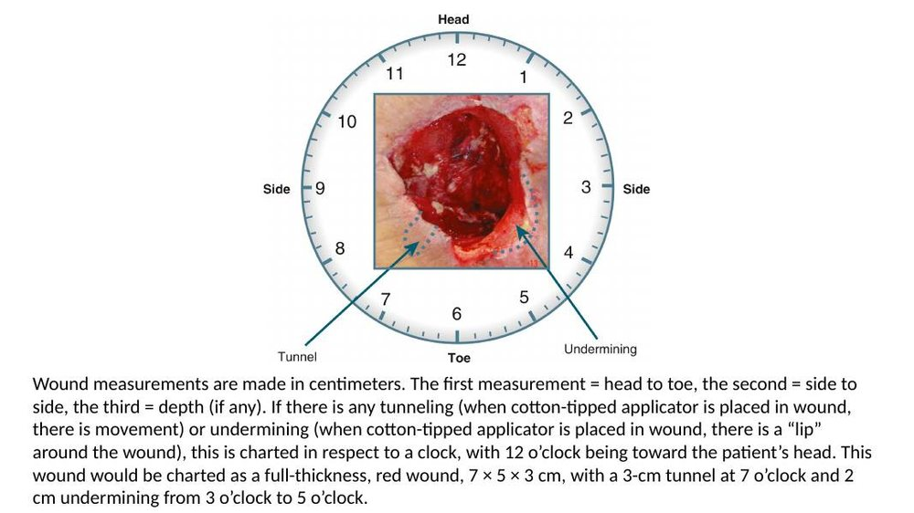
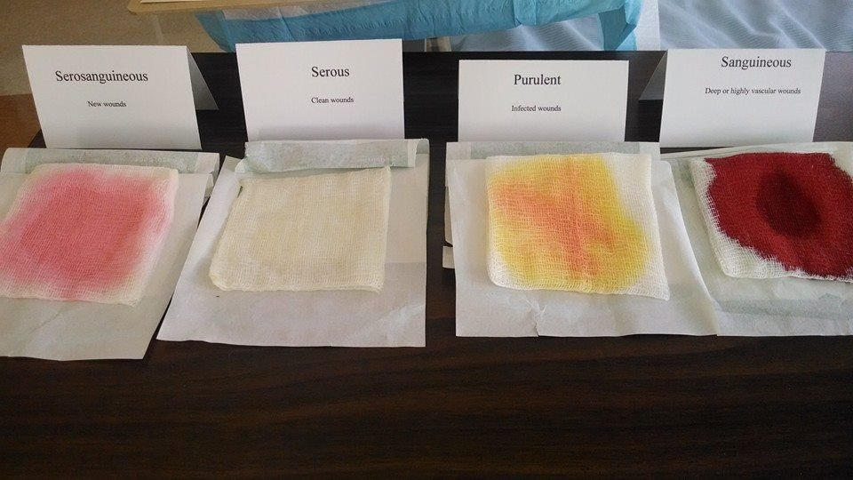

Fundamentals Review · Topic 8
Integumentary
Covers skin assessment and abnormal findings, pressure injury risk/staging/prevention, wound types and assessment (measurement, drainage), wound dressings, and surgical wound complications (hemorrhage, dehiscence, evisceration, infection).
Skin Assessment Basics
- The skin has two layers: the epidermis (outer, includes the basal layer where cells proliferate and slough) and the dermis (inner — strength/support/protection; contains capillaries, sweat glands, nerve endings, hair follicles). Skin is the body's largest organ; its main functions are protection and sensory perception.
- Assessment components: color (uniformity, pallor — check mucous membranes/lips/palms in dark skin tones), moisture (dry vs. diaphoretic — diaphoresis at rest is a significant finding), temperature (warm is normal; cold/hot can indicate infection or circulation problems), texture (smooth/rough, indurated = hardened), turgor (elasticity/fluid status — best checked at the collarbone or arm; changes with age), vascularity (redness, visible veins/capillaries, petechiae = tiny reddish-purple dots suggesting bleeding under the skin), and lesions (any unusual finding — wounds, rashes, moles — must be described).
- Pitting edema: excess fluid buildup, usually in dependent areas (legs/ankles/feet if mobile; sacrum/genitalia if bedbound). Must actually palpate to assess. Graded on a 0–4+ pitting scale.
Skin Color Changes
- Pallor (loss of color) — in darker skin tones can look gray; check mucous membranes. Suggests anemia, shock, or poor blood flow. Ask the patient/family if this is their normal baseline.
- Cyanosis (blue discoloration) — in darker skin tones can look yellowish-brown or gray; check nail beds, lips, mucosa, palms. Indicates hypoxia or impaired venous return.
- Jaundice (yellow discoloration) — seen in skin, sclera, and mucous membranes; indicates liver dysfunction/red blood cell breakdown. In darker skin, check the palms (sclera can have a normal slight yellow tint in some patients).
- Erythema (redness) — can indicate the start of pressure-related skin breakdown, inflammation, vasodilation, sun exposure, or elevated temperature. Palpate for warmth/texture change since redness itself is harder to see in darker skin tones. Mark the edges of a spreading area (e.g. cellulitis) with a skin marker so you can track whether it's spreading.
Pressure Injuries: Risk Factors & Staging
- Pressure injury (pressure ulcer, decubitus ulcer, "bed sore") = localized tissue injury from unrelieved prolonged pressure — compresses capillaries, cuts off blood flow, and causes tissue ischemia. Can also be caused by a medical device (nasal cannula, cast, brace).
- Pressure injuries are a nursing-sensitive quality indicator — a patient outcome directly influenced by nursing care (along with falls and CAUTIs) — meaning nursing owns this outcome.
- Three factors in development: pressure intensity (body weight, surface hardness), duration (time without repositioning), and tissue tolerance (perfusion, nutrition, aging, hydration status).
- Staging: Stage 1 (non-blanchable redness, intact skin) through Stage 4 (full-thickness with exposed bone/muscle/tendon) — know that a higher stage is worse; exact staging criteria are FYI-level detail.
- Deep tissue injury (DTI): persistent non-blanchable deep red/maroon/purple discoloration from pressure/shear at the bone-muscle interface — looks like a bruise but is not traumatic in origin.
- Unstageable: the wound bed is obscured by slough or eschar, so the true depth/stage can't be determined until debrided.
- Blanchable vs. non-blanchable: press a reddened area — if it turns white/lighter and the redness returns after release, it's blanchable (better prognosis, skin may still recover). Non-blanchable redness suggests deep tissue damage is already present.
- Braden Scale: a risk assessment tool ranging 6–23 — a lower score = higher risk. Used every shift for acute/progressive-care patients; less reliable in critical care (a separate scale, Jackson-Cubbin, is used in the ICU — not testable detail).
Other Skin Damage & Prevention Interventions
- MASD (moisture-associated skin damage): from prolonged exposure to urine/stool. Prevent with frequent checks and barrier creams — keep the patient dry.
- Intertrigo: inflammatory dermatitis from moist skin rubbing against itself in skin folds (under breasts/pannus, in armpits) — can develop yeast and painful cracked skin; needs to stay clean/dry, and a yeast infection needs a prescription antifungal.
- Periwound/peristomal damage: skin breakdown around a wound or stoma from enzyme/exudate exposure — ensure a well-fitting stoma appliance and keep surrounding skin dry.
- Prevention interventions: adequate nutrition/protein supplementation, incontinence and moisture management (barrier cream, wicking absorbent pads — adult diapers can give a false sense of security), frequent repositioning (turn at least every 2 hours), lift-assist devices/draw sheets to reduce friction injury, specialized mattresses, chair cushions, and heel-floating devices (pillows under the calves, or heel protectors for patients who move and kick pillows away).
- Nursing's role: thorough, consistent assessment of at-risk areas and any medical devices (nasal cannula, NG tube, braces), and catching redness while it's still blanchable — before it progresses to non-blanchable or open skin breakdown.
Wound Types & Factors Affecting Healing
- Acute wounds (trauma, surgical incision) proceed through the normal timely repair process and return to normal function — clean, well-approximated edges heal well.
- Chronic wounds (pressure ulcers, vascular insufficiency wounds, diabetic ulcers) fail to progress through normal healing and don't return to normal structure/function — often because impaired blood flow can't deliver the oxygen/nutrients needed to heal.
- Factors affecting healing: nutrition (deficiencies in vitamin A, C, zinc, copper, and protein delay healing — high-protein diet/supplements and multivitamins may be ordered; monitor albumin/prealbumin), tissue perfusion (oxygenated blood delivery — impaired in diabetic/vascular insufficiency wounds), infection (prolongs inflammation — watch for redness, purulent drainage, pain, fever), and age (more fragile skin, decreased circulation/nutrient absorption, delayed inflammatory response and collagen synthesis, slower epithelialization). Immune suppression (steroids, chemo), low hemoglobin, obesity, smoking, and chronic disease also impair healing.
- Wound management has 3 key components: assessment, cleansing, and protection.
Wound Assessment: Color, Measurement & Drainage

- Wound color: red = healthy/"beefy red" granulation tissue (good). Yellow = purulent drainage or slough (dead cells/exudate — can harbor bacteria/hide infection; a wound care team consult is appropriate). Black = eschar (dead tissue) — usually needs debridement, sometimes surgically.
- Measurement: in centimeters — first measurement is head-to-toe, second is side-to-side, third is depth. Tunneling and undermining are charted by clock position, with 12 o'clock toward the patient's head. Example: "full-thickness, red wound, 7×5×3 cm, with a 3 cm tunnel at 7 o'clock and 2 cm undermining from 3 to 5 o'clock."
- Closed/surgical wounds: skin edges should be well-approximated (staples/sutures/tissue adhesive); note any drains/tubes, pain control, and odor (infected wounds often have a noticeable odor).
- Photograph wounds regularly (often daily) to track progression objectively over time.

| Drainage type | Appearance | Meaning |
|---|---|---|
| Serous | Clear, watery, slightly yellow | Normal — like blister fluid; seen in clean wounds |
| Sanguineous | Red (bright = active bleeding; dark/brown = older blood) | Blood — deep or highly vascular wounds |
| Serosanguineous | Pale pink (mix of serous + sanguineous) | Common in new wounds |
| Purulent | Thick, yellow/tan/green/brown, cloudy/milky | Infection — contains WBCs, tissue debris, bacteria |
Amount is usually documented subjectively as scant, moderate, large, or copious (weighing a dressing is possible — 1 g ≈ 1 mL of drainage — but rarely done in practice). Also assess and document odor, consistency, and the integrity of the surrounding skin.
Wound Dressings
- Woven gauze/sponges: absorb exudate. Non-adherent material ("Adaptic"): doesn't stick to the wound bed — protects new tissue during frequent dressing changes.
- Wet-to-dry (really wet-to-damp): mechanical debridement until granulation forms; a moist wound bed supports epithelial cell movement and wound closure.
- Transparent/self-adhesive (Tegaderm): use cautiously — can pull off healthy surrounding skin on removal.
- Hydrocolloid (Duoderm): occlusive, swells with exudate, maintains a moist environment; typically changed about every 3 days (sooner if saturated).
- Hydrogel: mostly water, gels on contact with exudate, promotes autolytic debridement and rehydrates the wound bed — used for infected/necrotic wounds, not heavily draining ones (may need a secondary occlusive dressing).
- Alginate: non-adherent, conforms to the wound shape, absorbs exudate while maintaining moisture. Collagen: powder/paste/granules/gel that helps stop bleeding and promote healing.
- Wound VAC (negative-pressure/vacuum-assisted closure): foam in the wound bed under an occlusive dressing, connected to negative pressure (commonly −125 mm Hg, per order) — increases tissue perfusion, decreases swelling, stimulates granulation, and protects the wound. Used for non-healing/large/awkwardly-located wounds and dehisced wounds. Requires an order (pressure setting + change frequency, typically every 3 days); the canister collects drainage as part of ongoing assessment.
Surgical Wound Complications
- Hemorrhage: blood vessel damage — may show as sanguineous drainage, swelling/distention, or a developing hematoma (a localized blood collection — larger and firmer than a simple bruise). Watch for subtle vital sign changes (rising HR, falling BP). Treat as an emergency: apply a pressure dressing, notify the provider, monitor vitals — may need transfusion/fluids and a return to surgery.
- Dehiscence: partial or total separation of a sutured wound's underlying layers — usually occurs 3–11 days post-op, before collagen has fully formed. Risk factors: obesity, coughing, infection, poor suture technique, decreased blood flow. Managed with wet-to-damp dressings, allowing the area to granulate in.
- Evisceration = dehiscence with visceral organs protruding through the opening — often preceded by straining (coughing, straining to defecate, vomiting, sneezing), a sudden "popping"/giving-way sensation, and a marked increase in serosanguineous drainage.
- Shared risk factors for dehiscence/evisceration: chronic disease (diabetes, PVD), advanced age, obesity, invasive abdominal surgery, vomiting/coughing/sneezing/straining, dehydration, malnutrition, ineffective suturing, infection.
- Surgical site infection: typically presents 2–11 days post-op — pain, redness/swelling, purulent drainage, fever, chills, odor, increased pulse/respiratory rate, elevated WBC count. Risk factors: age extremes, immune suppression, impaired circulation/oxygenation, malnutrition, chronic disease, poor wound care. Prevention: aseptic technique for dressing changes, optimized nutrition, adequate rest, and antibiotics guided by culture and sensitivity results.
Self-Test Flashcards
Click a card to flip it and check your answer.
Practice Questions
All 20 Must Know + Extra Practice questions for this section, pulled from the same bank as Build Your Own Exam. Answer each, then submit to see your score and rationales.